1. السلسلة الأساسية لمنظومة القدرة الكهربائية
أكّد الدكتور إن الصورة العامة اللي لازم تكون في دماغنا هي التسلسل التالي:
Generator (المولد): يولّد الكهرباء عند جهد معين.
Transformer (المحول): يرفع أو يخفض الجهد.
Transmission (النقل): نقل القدرة بجهد عالٍ لمسافات طويلة.
Distribution (التوزيع): توصيل الكهرباء للمناطق والمنشآت.
Loads (الأحمال): الأجهزة والمعدات اللي بتستهلك القدرة.
وبشكل أكثر تفصيلًا، مسار الكهرباء من المحطة للمستهلك:
2. الـ Transformer (المحول)
2.1 وظيفته الأساسية
وظيفة المحول الأساسية هي تغيير مستوى الجهد الكهربائي مع نقل القدرة بين دائرتين:
Step-up Transformer: يرفع الجهد.
Step-down Transformer: يخفض الجهد.
المحول لا يحوّل الكهرباء إلى حركة، ولا الحركة إلى كهرباء. دي مش وظيفته. هو بيشتغل على:
لكن مع تغيير مستويات الجهد والتيار، وانتقال القدرة من دائرة لأخرى.
2.2 ليه بنستخدم الـ Transformer؟
لأن الجهد في شبكة الكهرباء بيكون مرتفع جدًا أثناء النقل لمسافات طويلة، عشان نقلل التيار وبالتالي نقلل الفقد في خطوط النقل. ولما الكهرباء توصل لمنطقة أو مصنع، بنحتاج نخفض الجهد للمستوى المناسب للاستخدام.
2.3 أماكن وجود المحولات
محطات الكهرباء · المصانع · شبكات التوزيع · المباني والمنشآت الكبيرة
2.4 نفس المحول ممكن يُستخدم Step-up أو Step-down
نفس مبدأ الـ Transformer ممكن يُستخدم في الاتجاهين. فلو عندنا Transformer مناسب للعمل بين مستويين من الجهد، ممكن يُستخدم لرفع الجهد (Step-up) أو لخفض الجهد (Step-down). واللي بيحدد ده هو نسبة اللفات والتوصيل ومستويات الجهد المطلوبة، مش إن فيه جهاز اسمه بالضرورة "Transformer Step-up" مختلف تمامًا عن "Transformer Step-down".
3. معرفة قدرة المحول في المصنع
لو بتشتغل في مصنع وعايز تعرف المحول اللي فيه، ما تعتمدش على كلام أي حد جوه المصنع بشكل عشوائي. مثلًا ممكن تلاقي مكتوب على المحول:
وده لا يعني إن المحول بيدي دائمًا 500 kW، لأن:
kVA = القدرة الظاهرية (Apparent Power) للمحول.
kW = القدرة الفعالة (Active Power).
كمان المحول مش مفضّل تشغيله باستمرار عند أقصى حمل له؛ عادةً بيتم مراعاة نسبة تحميل مناسبة حسب التصميم والتشغيل.
الـ Nameplate الخاصة بالمحول · بيانات المصنع · المخططات الكهربائية · الـ Single Line Diagram · بيانات الأحمال الفعلية.
ما تعتمدش بس على إنك تسأل واحد من العاملين "المصنع ده قدرته كام؟"، لأن الشخص ممكن ما يكونش عنده المعلومات الدقيقة، أو ممكن يفهم السؤال بطريقة مختلفة.
الـ Nameplate — بطاقة تعريف الجهاز
المحرك ممكن يكون موجود في مصنع أسمنت، أو مصنع حديد، أو أي بيئة صناعية صعبة، ويشتغل لسنين طويلة. لما ييجي مهندس جديد يتعامل معه، مش مفروض يعرف مواصفاته من شكله بس. كل جهاز تقريبًا بيكون عليه Nameplate تحتوي على أهم البيانات اللازمة للتعرف على الجهاز وتشغيله بالشكل الصحيح.
| البيان | Nameplate Data |
|---|---|
| الجهد المقنن | Rated Voltage |
| التيار المقنن | Rated Current |
| القدرة | Power |
| التردد | Frequency |
| السرعة | Speed / RPM |
| معامل القدرة | Power Factor |
| الكفاءة | Efficiency |
| طريقة التوصيل | Star / Delta |
← اسحب لرؤية المزيد →
الـ Nameplate مش خاصة بالمحركات بس؛ ممكن تلاقيها على Transformer, Generator, Motor وبعض معدات القدرة الأخرى، لأن الجهاز ممكن يشتغل لسنين وممكن ييجي مهندس تاني بعد كده يحتاج يعرف مواصفاته من غير ما يرجع للشخص اللي ركّبه.
4. الـ Single Line Diagram (SLD)
من الحاجات المهمة جدًا اللي هنقابلها في المصانع والمحطات، ويمكن اعتبارها خريطة النظام الكهربائي. بدل ما تدخل المصنع وتحتاج تعرف كل ماكينة وكل سلك بالتفصيل، تبص على الـ SLD تفهم منها:
مصدر التغذية · المحولات · المولدات · لوحات التوزيع · الأحمال · القواطع · طريقة توصيل أجزاء النظام ببعضها.
يعني الـ SLD بتديك صورة مختصرة عن النظام الكهربائي للمصنع أو المحطة.
5. Single Phase و Three Phase
5.1 Single Phase
في البيوت غالبًا بنتعامل مع Single Phase، وفيه عادةً Line و Neutral — يعني المصدر له طرفين أساسيين.
5.2 Three Phase
في أنظمة القدرة الكبيرة، زي المصانع ومحطات الكهرباء، بنستخدم غالبًا Three Phase System، وفيه ثلاث فازات: L1, L2, L3. الفرق الزاوي بين الفازات:
أي أن كل فازة متأخرة عن الأخرى بزاوية 120 درجة كهربائية.
5.3 ليه بنستخدم Three Phase؟
لأن أنظمة الـ Three Phase مناسبة جدًا لنقل وتوزيع القدرة الكبيرة. بدل ما نستخدم نظام Single Phase لنقل قدرة كبيرة، بنستخدم ثلاث فازات، وده بيخلي النظام أكثر كفاءة وملاءمة للأحمال الكبيرة، خصوصًا المحركات والمعدات الصناعية.
6. توصيلات Star و Delta
6.1 Star Connection (Y-Connection)
في توصيل النجمة، بيتم تجميع أحد أطراف الفازات (الملفات) الثلاثة في نقطة مشتركة تسمى Neutral Point (نقطة التعادل). وبكده يبقى عندنا ثلاثة أطراف للفازات بالإضافة لنقطة التعادل عند إخراجها. عندنا L1، L2، L3، وممكن يكون عندنا Neutral، والفرق الزاوي بين الفازات يفضل $120^\circ$ كهربائية.
6.2 Delta Connection (Δ-Connection)
في الـ Delta، بيتم توصيل نهاية كل ملف ببداية الملف اللي يليه، وبالتالي الملفات الثلاثة بتتصل مع بعضها على شكل مثلث.
| التوصيلة | الوصف |
|---|---|
| Star (Y) | تجميع طرف من كل ملف في نقطة تعادل مشتركة (Neutral) |
| Delta (Δ) | توصيل نهاية كل ملف ببداية التالي، على شكل مثلث |
لما تتعامل مع محرك كهربائي، مهم تعرف هل المحرك مصمم للعمل بتوصيلة Star ولا Delta، وإيه قيم الجهد والتيار المناسبة لكل توصيلة.
في محطات التوليد الكبيرة بنتعامل مع أنظمة Three Phase، والمولدات الكبيرة عادةً بتكون مصممة لإنتاج نظام ثلاثي الأوجه. مهم نفهم الفرق بين Single Phase / Three Phase / Star Connection / Delta Connection، لأن المفاهيم دي هتتكرر كتير في دراسة أنظمة القدرة والمحطات والمصانع.
7. Energy Conversion — تحويل الطاقة
Energy can neither be created nor destroyed, but it can be converted from one form to another. Magnetic field is the medium of energy conversion.
قبل ما ندخل في الـ Transformer والـ Machines، لازم نفهم فكرة تحويل الطاقة. فيه أنواع مختلفة:
| الجهاز | نوع التحويل |
|---|---|
| Generator (المولد) | Mechanical Energy → Electrical Energy |
| Motor (المحرك) | Electrical Energy → Mechanical Energy |
| Transformer (المحول) | Electrical Energy → Electrical Energy |
← اسحب لرؤية المزيد →
خلاصة: الـ Motor والـ Generator متشابهان في المبدأ العام، لكن اتجاه تحويل الطاقة مختلف. الـ Transformer بيحوّل كهرباء لكهرباء مع تغيير مستويات الجهد والتيار وانتقال القدرة من دائرة لأخرى.
8. الـ Magnetic Field (المجال المغناطيسي)
لو عايزين نحوّل الطاقة بين Electrical و Mechanical، لازم يكون عندنا عنصر أساسي جدًا وهو Magnetic Field. ممكن نعتبره الوسيط اللي تنتقل من خلاله الطاقة بين الأجزاء المختلفة في الـ Electrical Machines. والسؤال: كيف نستطيع توليد Magnetic Field بطريقة فعالة؟
المجال المغناطيسي الناتج عن التيار
لما يمر تيار كهربائي في سلك، يتولد حول السلك Magnetic Field. واتجاه المجال المغناطيسي يمكن تحديده باستخدام Right-Hand Rule (قاعدة اليد اليمنى) — يعني اتجاه المجال بيعتمد على اتجاه التيار المار في السلك.
ليه بنستخدم Coil / Winding؟
المجال الناتج عن سلك مستقيم واحد بيكون محدود نسبيًا. عشان كده، لو عايزين مجال مغناطيسي أقوى وأكثر فاعلية، بنستخدم Coil / Winding (لفّ السلك عدة لفات). وبدل ما يكون عندنا سلك واحد يولّد مجالًا ضعيفًا، يبقى عندنا عدة لفات، وبالتالي تتجمع تأثيرات المجالات المغناطيسية الناتجة عنها.
8b. تطبيقات الدائرة المغناطيسية الثلاثة
الدائرة المغناطيسية ليها ثلاثة تطبيقات أساسية بتربط بين التيار، المجال المغناطيسي، والقوة/الجهد. الثلاثة دول هما أساس عمل كل الـ Electrical Machines.
Application 1 — Coil / Solenoid (المغناطيس الكهربائي)
A current carrying wire produces a magnetic field around it (Magnet).
لما نلف السلك حول مسمار حديدي (Iron Nail) ونوصّله ببطارية، السلك بيتصرف كملف (Coil)، والتيار المار فيه بيولّد مجال مغناطيسي حول المسمار، فيتحول المسمار الحديدي لمغناطيس مؤقت له قطب شمالي (N) وقطب جنوبي (S). اتجاه المجال بيتحدد بـ Right-Hand Rule اللي شرحناها في القسم السابق.
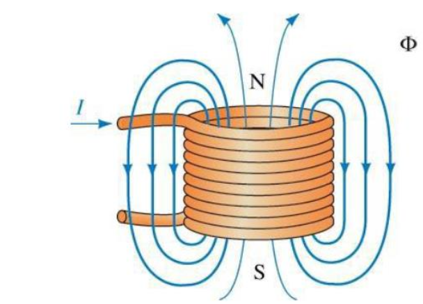
Application 2 — Faraday's Law (مبدأ عمل المحول)
Faraday's law states that the time variation of flux linkage induces voltage (transformer).
يعني لما يكون عندنا فيض مغناطيسي متغير مع الزمن داخل قلب مغناطيسي، وده بيحصل من مصدر AC موصّل بملف أولي $N_1$، الفيض المتغير ده بيقطع ملف ثانوي $N_2$ ملفوف على نفس القلب، فيتولد فيه جهد مستحث. ده بالظبط المبدأ اللي بيشتغل عليه الـ Transformer، واللي هنرجع نفصّله في قسم لاحق.
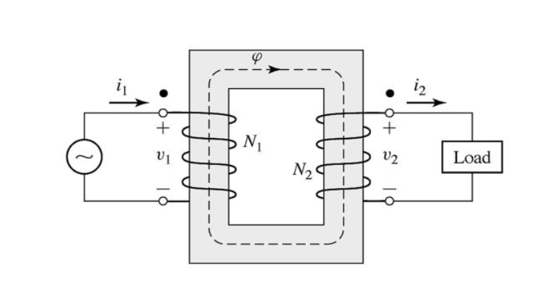
Application 3 — Generator
A moving wire in the presence of a magnetic field has a voltage induced in it (generator).
هنا بنستخدم Fleming's Right Hand Rule لتحديد اتجاه التيار الناتج: لو حركنا سلك داخل مجال مغناطيسي (بين قطبين N و S)، بيتولد فيه جهد كهربائي (EMF).
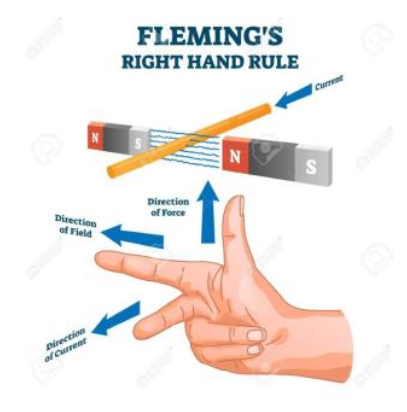
في المولد العملي، الملف بيدور ميكانيكيًا داخل المجال المغناطيسي، والتيار بينتقل للخارج عن طريق Carbon Brushes و Metal Rings (Slip Rings).
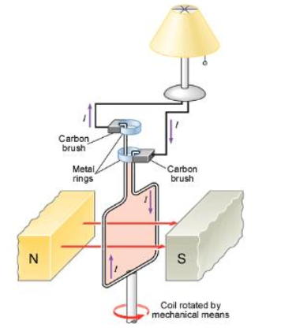
والجهد الناتج بيكون على شكل موجة جيبية متغيرة مع الزمن:
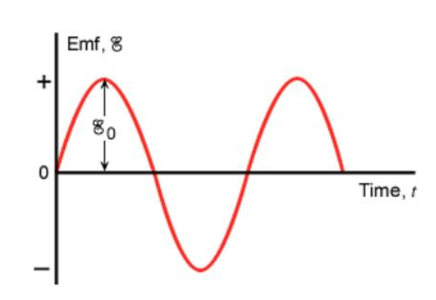
Application 4 — Motor
A current-carrying wire in the presence of a magnetic field has a force induced on it (motor).
العكس من المولد: هنا عندنا سلك بيحمل تيار وموجود داخل مجال مغناطيسي، فبتتولد عليه قوة ميكانيكية (Force)، والقوة دي هي اللي بتنتج عزم الدوران في المحرك. ده هو المبدأ الأساسي اللي هنفصّله أكتر في قسم الـ DC Motor لاحقًا في المحاضرة.
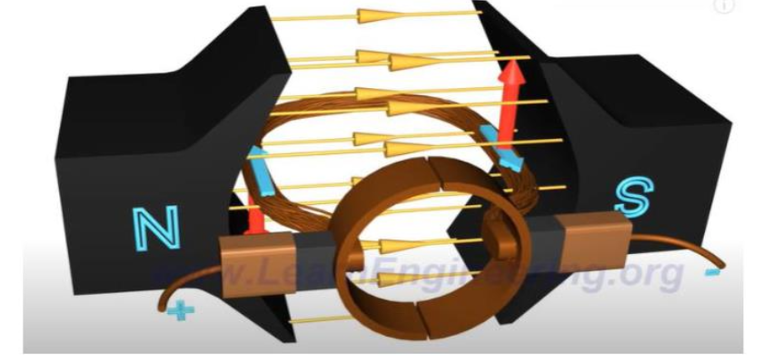
https://www.youtube.com/watch?v=LAtPHANEfQo
التطبيقات دي كلها بتدور حول نفس الفكرة: العلاقة بين التيار و المجال المغناطيسي و الجهد/القوة — وهي نفسها الأساس اللي هنبني عليه فهم الـ Transformer والـ Generator والـ Motor في باقي المقرر.
9. Reluctance والحاجة لاستخدام الحديد
لو حطينا الملف في الهواء، هيولّد مجالًا مغناطيسيًا، لكن المجال الناتج ممكن ما يكونش بالشكل أو القوة المطلوبة. والسبب مرتبط بخاصية مهمة في الدوائر المغناطيسية اسمها Magnetic Reluctance (الممانعة المغناطيسية)، وهي تشبه إلى حد ما فكرة المقاومة في الدائرة الكهربائية.
| الدائرة الكهربائية | الدائرة المغناطيسية |
|---|---|
| Resistance تقاوم مرور التيار | Reluctance تقاوم تكوّن ومرور الفيض المغناطيسي |
والهواء لديه Reluctance عالية مقارنةً بالمواد المغناطيسية المناسبة، لذلك بنستخدم مادة ذات خصائص مغناطيسية أفضل لتكوين مسار للفيض.
فيه مواد وسبائك بيتم اختيارها بعناية للحصول على خواص مغناطيسية معينة، من ضمنها المواد المستخدمة في تصنيع Permanent Magnets (المغناطيسات الدائمة) اللي بتحتفظ بمغنطتها لفترة طويلة. مثال ذكره الدكتور: فكرة قطارات Maglev اللي بتعتمد على الرفع المغناطيسي — الفكرة الأساسية إن المجال المغناطيسي ممكن يُستخدم لإنتاج قوى ميكانيكية.
10. الـ Magnetic Circuit (الدائرة المغناطيسية)
لما نحط الملف حول قلب مصنوع من مادة مغناطيسية مناسبة، الفيض المغناطيسي بيلاقي مسارًا أفضل، وهنا نبدأ في تكوين Magnetic Circuit. فكما أن التيار الكهربائي بيسير في مسار داخل دائرة كهربائية، فإن Magnetic Flux بيسلك مسارًا داخل الـ Magnetic Circuit. ولهذا بنستخدم في المحولات والماكينات الكهربائية قلوبًا مصنوعة من مواد مغناطيسية مناسبة، وليست مجرد قطعة حديد عادية.
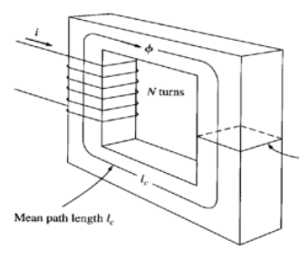
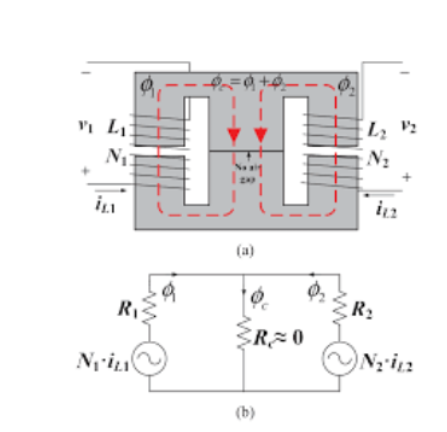
11. التعريفات الأساسية للدائرة المغناطيسية
Φ — Magnetic Flux: عدد خطوط القوة المغناطيسية (Weber).
B — Magnetic Flux Density (تسلا، $T = Wb/m^2$).
F — Magnetomotive Force (MMF): القدرة على رفع المجال المغناطيسي.
Reluctance ($\mathcal{R}$): الممانعة المغناطيسية، حيث $l_c$ طول المسار المغناطيسي المتوسط، و $\mu$ النفاذية المغناطيسية.
H — Magnetic Field Intensity (AT/m): الجهد الذي يبذله التيار لإنتاج مجال مغناطيسي.
λ — Flux Linkage: الفيض الناتج مضروبًا في عدد اللفات (Weber).
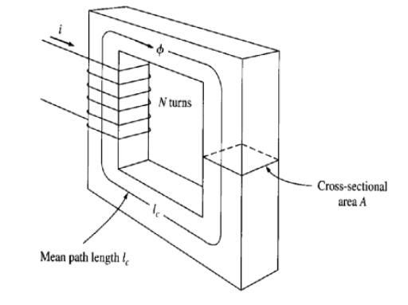
12. Magnetic Circuit مقابل Electric Circuit
الفكرة إننا هنحاول نعمل نموذجًا يشبه إلى حد ما الدائرة الكهربائية، عشان نقدر نحسب الـ Magnetic Flux ونحلل الـ Magnetic Circuit بطريقة أسهل:
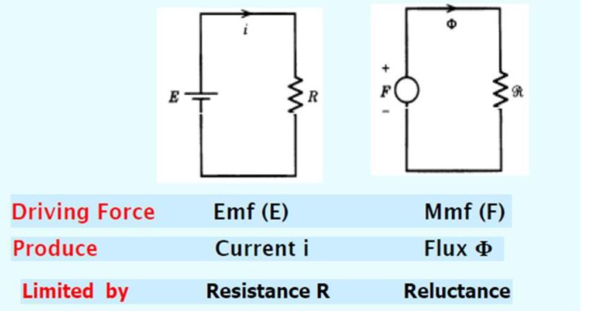
| Electric Circuit | Magnetic Circuit | |
|---|---|---|
| Driving Force | EMF (E) | MMF (F) |
| Produces | Current (i) | Flux (Φ) |
| Limited by | Resistance (R) | Reluctance (ℛ) |
← اسحب لرؤية المزيد →
التشبيه دي بتشبه في فكرتها قانون أوم في الدائرة الكهربائية:
مع الفرق طبعًا إن دي دائرة مغناطيسية وليست دائرة كهربائية.
13. مثال محلول — Example 1
Calculate: F, H, B, R and φ
-
MMF:
\[ F = N \cdot i = 100 \times 1 = 100\ \text{AT} \]
-
Field intensity H:
\[ H = \frac{F}{l_c} = \frac{100}{0.4} = 250\ \text{AT/m} \]
-
Flux density B:
\[ B = \mu H = 4\pi \times 10^{-7} \times 5000 \times 250 = 1.57\ \text{T} \]
-
Reluctance R:
\[ \mathcal{R} = \frac{l_c}{\mu A} = \frac{0.4}{4\pi \times 10^{-7} \times 5000 \times 0.01} = 6366.385\ \text{A-turns/Wb} \]
-
Flux φ:
\[ \phi = B \cdot A = 1.57 \times 0.01 = 0.0157\ \text{Wb} \]
14. Fringing Effect
The effective cross-sectional area of the air gap is larger than the cross-sectional area of the iron-core.
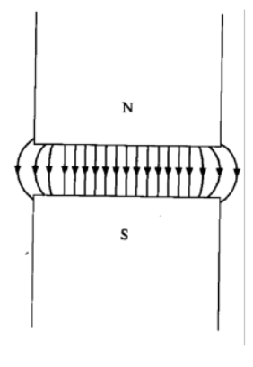
Practically:
1. Add the air gap length to each dimension.
2. Assume the effective area is 5% more than the cross-sectional area of the iron-core.
15. المبدأ الأساسي لعمل الـ Transformer
مكونات المحول البسيط
ملف أولي Primary Winding · ملف ثانوي Secondary Winding · قلب مغناطيسي Magnetic Core
خطوات العمل
- بنوصّل مصدر كهربائي (AC) بالـ Primary.
- لما يمر تيار متغير في الملف الأولي، يتولد مجال مغناطيسي متغير، وبالتالي Magnetic Flux متغير داخل الـ Magnetic Core.
- الفيض المتغير ده بيقطع موصلات الملف الثانوي، فيتسبب في توليد EMF — Electromotive Force في الملف الثانوي.
- وبالتالي نحصل على جهد كهربائي في الطرف الثانوي.
يعني الطاقة بتنتقل من الملف الأولي للملف الثانوي عن طريق Magnetic Coupling.
من أهم مميزات الـ Transformer إن الملف الابتدائي والملف الثانوي ليس بينهما اتصال كهربائي مباشر في المحول التقليدي، لكن بينهما Magnetic Coupling. والخاصية دي بتسمح باستخدام المحول لتحقيق Electrical Isolation (العزل الكهربائي بين دائرتين).
في الأنظمة الصناعية والـ Mechatronics: Power Circuit يجب فصلها وعزلها عن Control Circuit عندما يتطلب التصميم ذلك، لحماية دائرة التحكم وتقليل انتقال الجهد العالي إليها في حالة حدوث Fault في دائرة القدرة.
16. Turns Ratio ونقل القدرة
علاقة الجهد بعدد اللفات
$V_1$: جهد الـ Primary — $V_2$: جهد الـ Secondary
$N_1$: عدد لفات الـ Primary — $N_2$: عدد لفات الـ Secondary
نسبة الجهد بتعتمد على Turns Ratio. لو عدد لفات الملف الثانوي أكبر من الأولي → Step-up. لو أقل → Step-down.
ليه بنرفع الجهد أثناء نقل القدرة؟
يعني نفس القدرة ممكن تُنقل باستخدام جهد كبير وتيار صغير، أو جهد صغير وتيار كبير. لكن التيار الكبير له مشكلة مهمة، وهي إنه بيؤدي لفقد أكبر في خطوط النقل:
الاستنتاج: كل ما زاد التيار، زادت الخسائر بشكل كبير (لأن العلاقة مع مربع التيار). لذلك بنرفع الجهد ونقلل التيار أثناء النقل.
لأن التيار الكبير بيحتاج موصلات أكبر لتحمل التيار (Cross-sectional Area أكبر)، يعني موصل أكبر ووزن وتكلفة أكبر وفقد قدرة أكبر. أما رفع الجهد فبيسمح بنقل نفس القدرة تقريبًا بتيار أقل، وبالتالي موصلات أنسب مع تقليل الفقد.
17. الـ DC Motor
في الـ DC Motor محتاجين نحقق شرط أساسي:
أي محتاجين: (1) تيار يمر في الموصل، و(2) مجال مغناطيسي. عند وجود الاثنين، بتتولد قوة على الموصل، وممكن نستخدم القوة دي لإنتاج عزم دوران.
Commutator والـ Brushes
Commutator: أجزاء موصلة، غالبًا من النحاس، مرتبطة بملفات الـ Armature.
Brushes (الفُرَش): بتلامس الـ Commutator، ووظيفتها توصيل التيار الكهربائي إلى الجزء الدوار مع السماح له بالدوران.
| الجهاز | دور المجال المغناطيسي |
|---|---|
| Transformer | نقل الطاقة بين الملفين عن طريق Magnetic Coupling |
| Generator | تحويل الطاقة الميكانيكية إلى كهربائية |
| Motor | تحويل الطاقة الكهربائية إلى ميكانيكية |
← اسحب لرؤية المزيد →
18. الخلاصة العامة وملاحظات الدكتور
أهمية المهندس وقت المشكلة
طول ما المصنع شغال بشكل طبيعي، ممكن ما يبانش تأثير قرارات المهندس بشكل كبير. لكن لما تحصل مشكلة ويتوقف الإنتاج، يبدأ العمل Under Pressure: الإنتاج متوقف، الـ Owner منتظر الحل، الوقت محسوب، وكل دقيقة توقف ممكن يكون لها تكلفة. وهنا بتظهر أهمية إن المهندس يكون فاهم النظام وقادر على تحليل المشكلة واتخاذ القرار المناسب.
أولًا: أنواع تحويل الطاقة
| الجهاز | نوع التحويل |
|---|---|
| Generator | Mechanical → Electrical |
| Motor | Electrical → Mechanical |
| Transformer | Electrical → Electrical (تغيير الجهد والتيار) |
← اسحب لرؤية المزيد →
ثانيًا: الـ Transformer
ممكن يكون Step-up لرفع الجهد، أو Step-down لخفض الجهد.
العلاقة الأساسية: $\dfrac{V_1}{V_2} = \dfrac{N_1}{N_2}$
بيحقق Electrical Isolation عن طريق الـ Magnetic Coupling.
ثالثًا: أنظمة القدرة
في أنظمة القدرة الكبيرة بنستخدم غالبًا Three Phase، والفازات الثلاث بينها $120^\circ$، وممكن توصيلها إما Star أو Delta.
الـ Single Line Diagram هي الخريطة اللي بتساعدنا نفهم النظام الكهربائي داخل المصنع أو المحطة.
الـ Nameplate هي بطاقة تعريف أي جهاز.
رابعًا: العنصر المشترك
العنصر المشترك في كل الماكينات دي هو Magnetic Field، ولكي نحلله نبدأ بدراسة Magnetic Circuit، وأهم عناصره:
📚 ملاحظات مهمة من الدكتور
1. المحول لا يحوّل الكهرباء إلى حركة ولا العكس — وظيفته تغيير مستوى الجهد فقط.
2. kVA ≠ kW — الـ kVA قدرة ظاهرية، والـ kW قدرة فعالة.
3. المحول مش مفضّل تشغيله باستمرار عند أقصى حمل له.
4. ما تعتمدش على كلام العاملين في معرفة قدرة المصنع؛ ارجع للـ Nameplate والمخططات والـ SLD وبيانات الأحمال الفعلية.
5. ما تحفظش أرقام مستويات الجهد الواردة في التسجيل حرفيًا؛ الأرقام الفعلية بتعتمد على الشبكة ومستوى التوزيع في المكان.
6. أهمية المهندس بتظهر وقت المشكلة، لما يكون الإنتاج متوقف والوقت محسوب.
7. في الـ Mechatronics والأنظمة الصناعية: افصل دائرة القدرة عن دائرة التحكم لما التصميم يتطلب ذلك.
8. القادم في المحاضرة: البدء في دراسة الـ Transformer رياضيًا وحل المسائل باستخدام مفاهيم الـ Magnetic Circuit.